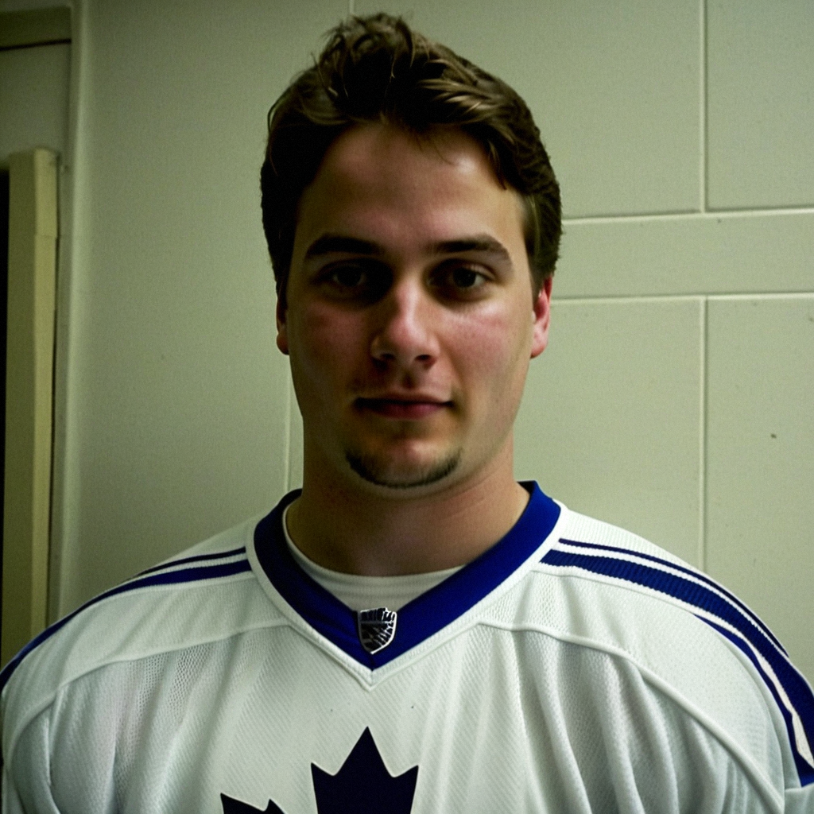

Klesla: 'We are not perfect, and that is good'
The 22-year-old defenseman took the 3-7 loss at face value, named Spacek for a 3-point night, and said the room is sharper for the stumble.
 Marcus BellRinkside reporter · The Tunnel
Marcus BellRinkside reporter · The Tunnel
2:37 · synthetic voices, produced from the record · download
 Rostislav Klesla81 watched
Rostislav Klesla81 watched  Toronto Maple Leafs's 14-game win streak end in a 3-7 road loss at Atlanta on 2004-12-16, and in the tunnel he did not make it bigger than that. 22 years old, 19 points in 31 games, 14.7 minutes a night, the defenseman took the hit, credited his center, and had a bus to catch.
Toronto Maple Leafs's 14-game win streak end in a 3-7 road loss at Atlanta on 2004-12-16, and in the tunnel he did not make it bigger than that. 22 years old, 19 points in 31 games, 14.7 minutes a night, the defenseman took the hit, credited his center, and had a bus to catch.
Transcript
Marcus Bell here in the tunnel at Atlanta, just after Toronto fell 3-7 on the road. That ends the 14-game win streak. 23 and 6, still first in the East. Rostislav Klesla, 22, 19 points in 31 games. Rostislav, you were out there for the third. Walk me through what you saw.
Yeah. They, they push. Home team, you know, they want the win, and they, they get it. And we, we are not, how you say, not as sharp in our end. We give them some, and then it is, it is hard. 3-7, that is a lot of goals. But the third, it is where it, it happens, you know. They get louder, we get, we get tired, and then the mistakes come.
Outshot 30 to 19. You can see that from the back end. What does that look like when you're in your own zone?
It is a lot of pucks. You see the puck come from all sides, you know. And you have to, you have to be ready. And I think tonight we, we are not ready enough. Not ready for the, the pace they play. They are fast, and we are, how you say, a little slow tonight. That is, that is the problem.
Fourteen straight, and then this. Does a loss like this feel different when you've been winning that much?
A little, yes. Because you are used to win. And then you lose, and you think, ah, we are not, we are not perfect. And that is, that is good, you know. Because if you think you are perfect, then you lose more. So I am, I am okay. We are 23-6, that is good. We just play the next game.
You're in 14.7 minutes a night. In a game where you're giving up 7, what's the job?
The job is defend. That is it. You don't give them the easy shot. You don't let them get behind. You clear the puck, you stay in front, and you make them shoot from the outside. And I think tonight we let them shoot from too many, too many places. That is not good. We need to be better. That is all.
Did anyone stand out to you tonight? A teammate who had a night?
Yeah, Vaclav. Spacek, he had a good night. Three points, you know. He is fast, and he finds the space, and he makes the play. And I am happy for him. When your center, he score like that, it makes my job easier. I just need to be safe behind him. And he, he works. He works every night.
The road. 8 and 3 on the road before tonight. What's different about a building like this?
The ice, you know, it is a little different. And the sound, they are loud. And we are not rested, maybe. The bus is long, and then you play. So it is, it is hard. But 8-3 is good. We need to keep winning there. That is the thing.
Last one. The bus leaves in 90 minutes. What are you thinking about on that bus?
Nothing, you know. I close my eyes. And tomorrow we practice. We look at the video, we see what we give up, and we fix it. That is all. The bus is not a good place to think. I just sleep.
Rostislav Klesla, thank you. Back to you.